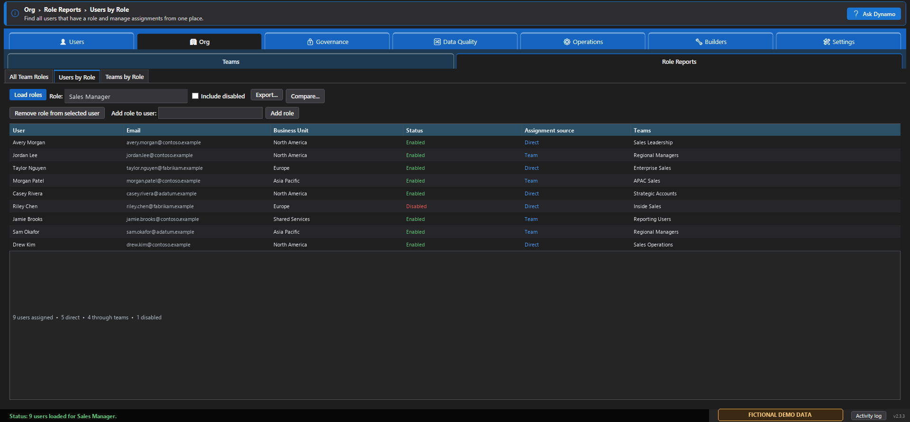
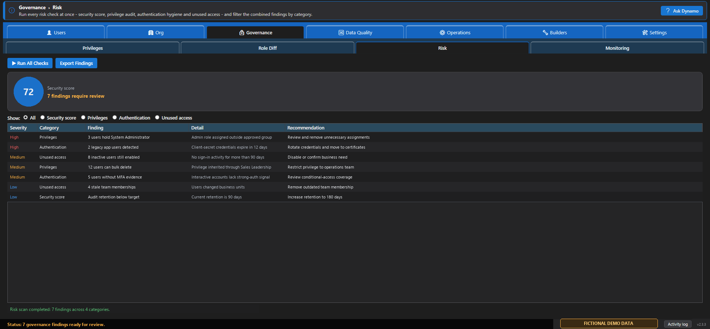
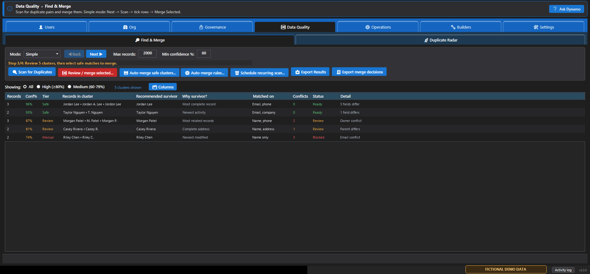
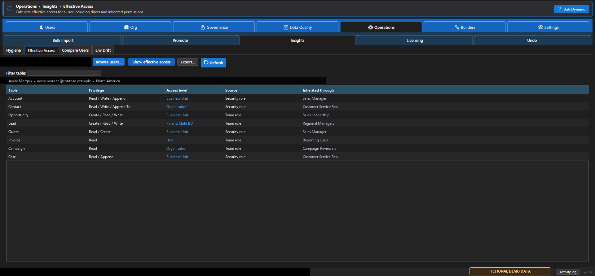
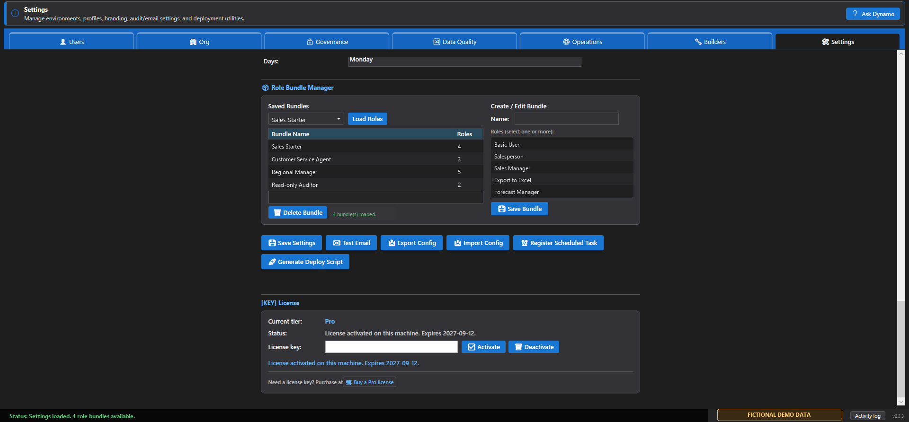

Dynamic Dynamo Kit 2.3.3
User manual
A practical reference for the Windows desktop app and customer-facing command line. Labels match version 2.3.3.
Safety model
- What-If Mode: supported write commands receive preview mode and do not write changes.
- Confirmation: destructive or mutating operations require deliberate confirmation.
- Undo: supported recent actions can be reversed when the required recovery data still exists. Some operations are not reversible.
- Exports: report grids can be exported to CSV or XLSX where an export control is shown.
- Your responsibility: use a sandbox and keep independent Dataverse backups. Local snapshots and Undo are safety nets, not guarantees.
Users
| Workflow | How to use it | Tier and safety |
|---|---|---|
| User Access > Roles | Find a user, select Load roles, then review or use Add role / Remove selected role. | Free surface Writes need role-assignment privileges and confirmation. |
| User Access > Teams | Find a user, Load teams, then add or remove team membership. | Free surface Writes need team-membership privileges. |
| User Access > Business Units | Use Load BUs, choose the destination, then Change BU. | Free surface Business-unit changes can have wide access effects; preview and review first. |
| App Profiles / Chat Queues | Load a profile or queue and add or remove users. | Requires the corresponding membership privileges. |
| Onboard User | Set the user, business unit, roles, teams, and queues. Run What-If Preview, review, then Apply. | Pro |
| Copy Access | Choose source and target users, review the access to copy, then apply. | Pro Preview before writing. |
| Mass Reassign | Choose source and target users plus the entity. Preview affected counts, then apply. | Pro Requires ownership/write privileges. |
| Offboard | Search for the person across environments, review discovered access and records, then offboard only the selected items. | Pro Use What-If and verify every environment. |
Org
| Workflow | Purpose | Notes |
|---|---|---|
| Teams > Create | Create a business unit or team under the correct parent business unit. | Requires organization administration privileges. |
| Team Roles | Load a team's roles, then add or remove an assignment. | Writes follow confirmation and What-If behavior. |
| Team Members | List membership and optionally compare teams between environments. | Comparison is read-only. |
| Match to Prod | Preview role differences against production, review, then apply selected synchronization. | Confirm source and target before applying. |
| Role Reports | Run All Team Roles, Users by Role, or Teams by Role; filter and export. | Free reporting Inline assignment controls are writes. |

Governance Pro
| Area | Purpose | Output and safety |
|---|---|---|
| Privileges > By Role | Inspect privilege depth by role and table; compare or grant. | Compare is read-only. Grant is a confirmed write. |
| Privileges > Lookup | Find who holds a privilege and where it is granted. | Read-only investigation. |
| Role Diff | Compare a role between two environments. | Read-only differences that can be exported. |
| Risk | Review security score, risky privileges, authentication/service-account hygiene, and unused access. | Produces reviewable findings and recommendations; it does not imply automatic cleanup. |
| Monitoring > Snapshots & Changes | Take local snapshots and compare two points in time. | Exportable change history. |
| Monitoring > Compliance | Run evidence-friendly compliance checks. | Review and export the report. |
| Monitoring > Alert Rules | Configure, test, and run governance alerts. | Test the configuration before relying on notifications. |

Data Quality
Duplicate Radar
Select Run Org Radar to rank likely duplicate records, or find a contact and select Find Duplicates of Selected. Radar is an investigative workflow and does not merge records.
Find & Merge Pro
- In Simple mode, select Next, set maximum records and minimum confidence, then scan.
- Filter High or Medium confidence clusters and inspect why each survivor is recommended.
- Select records, open Review / merge selected, resolve field conflicts, and confirm the survivor.
- Select Perform merge only after the review is complete.
Advanced mode adds saved match profiles. Auto-merge rules control minimum confidence, tolerated conflicts, protected fields, blank filling, and cluster size per environment. Protected or conflicting records can be forced into manual review. A recurring scan exports findings and does not automatically merge them.

Operations
| Workflow | Purpose | Tier and safety |
|---|---|---|
| Bulk Import | Load a CSV, run Validate / Preview, review the preview, then apply. | Pro Validate before every import. |
| Promote | Compare configuration between source and target environments, then apply reviewed changes. | Pro Verify source/target direction. |
| Insights > Hygiene | Find stale security objects, unused objects, and ownership issues. | Pro Review/export. |
| Insights > Effective Access | Calculate a user's direct and inherited permissions. | Pro Read-only. |
| Insights > Compare Users | Compare two access footprints side by side. | Pro Read-only. |
| Insights > Env Drift | Detect configuration differences across environments. | Pro Read-only/export. |
| Licensing > Overview / Waste Report | Review Microsoft license pools, assignments, availability, and likely cleanup candidates. | Pro Reports do not automatically reclaim seats. |
| Undo | Review recent actions, select a reversible action, and use Undo Selected. | Only actions reported as reversible can be undone. Export or clear history as needed. |

Settings
- Environments: add, edit, remove, test, or discover environment connections.
- Profiles: create and switch local configuration profiles. Switching disconnects current sessions.
- Appearance: set theme, branding, logo, title, and subtitle.
- Audit and notifications: configure local audit behavior, optional SharePoint, Log Analytics, SQL, or SMTP destinations that you control.
- Configuration portability: export or import a configuration ZIP. Import replaces existing configuration and requires confirmation.
- Scheduling: set report output location and schedule, then register the scheduled task. What-If does not register it.
- Offline Mode: disable update checks. Connected Dataverse operations still require network access.
Dynamic Dynamo Kit licensing
The Settings license panel shows Free, Pro (Trial), or Pro. Select Buy a Pro license to open Lemon Squeezy, enter the issued key, and select Activate. To move an activation, select Deactivate on the current device first.
If online validation cannot complete, Pro may be locked for the session. Free-tier features remain available. Microsoft Store distributes the free app but does not sell, bill, refund, or support the separate Pro transaction.

Builders
The Builders tab contains focused helpers for assembling Dataverse and automation inputs without hand-writing every expression:
- Query Builder for constructing data queries.
- Kusto Builder for KQL-oriented query text.
- Flow Condition Builder for Power Automate condition expressions.
- Connection String Builder for connection configuration.
Review generated text before using it, and never paste client secrets or certificate passwords into tickets, screenshots, or public documentation.
Command-line interface
The included CLI supports setup, connections, reports, changes, exports, and scheduled jobs.
Mutating commands require --confirm or --what-if; otherwise no
action is performed. Reports can export CSV files to the local exports directory. Use
--what-if first for any command that may change data.
Support and issue reporting
Include the app version, Windows version, affected tab, exact error, authentication mode, whether What-If was enabled, and sanitized reproduction steps. Never post license keys, client secrets, access tokens, customer data, or tenant-specific confidential information.